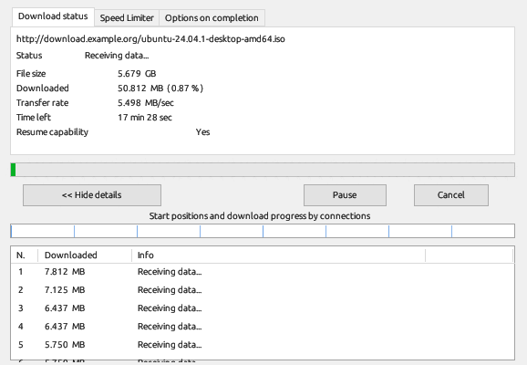
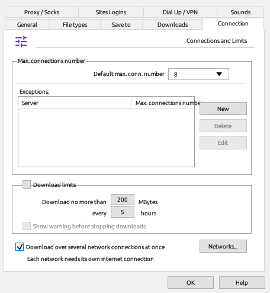
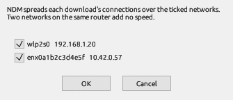

NDM splits a file into parts and downloads them over several connections at the same time. This page explains how the parts are made, how a download resumes, and how to limit or spread the traffic.
The first request already downloads the file. When the server accepts requests for parts of a file, NDM adds connections while the download runs:
Each new connection takes the second half of the largest part still left. A part is only split when at least 512 KB of it remains, so no part is smaller than 256 KB. When a connection finishes its part, it takes another, so all connections stay busy until the end.

The progress window lists every connection with the amount it has downloaded, and the strip under the progress bar shows which parts have arrived. A connection that fails is retried after 2, 4, 8, 16 and 30 seconds; after 5 failed retries in a row it gives up and the other connections take over its part.
A stopped or interrupted download keeps its parts. When it resumes, NDM downloads the last 64 bytes of each part again and compares them with what it already has. If they differ, or the server reports a different date for the file, NDM tells you the file has changed instead of joining two different files.
A server that doesn't accept requests for parts can't resume: the download starts again from the beginning, over one connection.
The default number of connections is set in Options → Connection: 1, 2, 4, 8, 16, 24 or 32. The same page sets a lower number for single servers.
Downloads → Speed Limiter limits how fast each file downloads, so the rest of your network stays usable. The icon in the notification area turns it on and off too.
With two internet connections, for example Wi-Fi and a phone connected by USB, NDM can spread each download's connections over both.


Each ticked network runs its own connections, as many as the download would get on one network (the number set on the Connection page), starting with one and doubling as on a single network. Parts are shared out as connections free up, so a faster network ends up with more of the file. Near the end, the part that would take longest is split by the two connections' speeds, so a slow network can't hold up the finish.
NDM looks at the networks every second while a download runs. A network you plug in, or tick in the Networks window, joins the download in progress; one that drops out, or that you untick, hands its parts back to the others, and the download goes on without an error. A part that failed on one network goes to another one first. The progress window shows each network's speed and its share of the download.